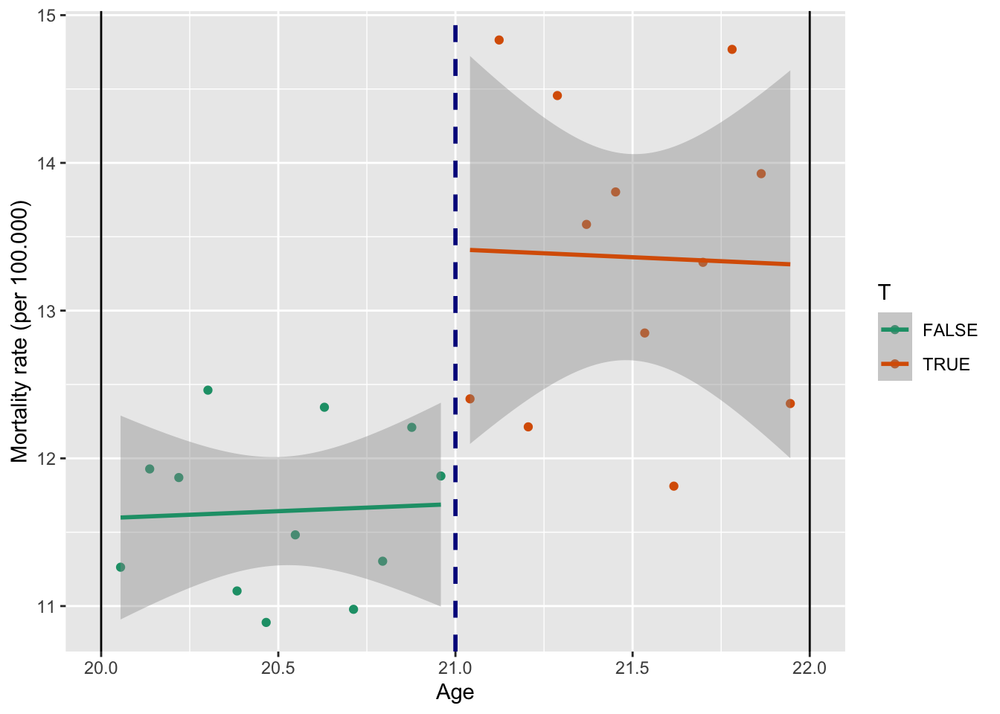

В нашей жизни есть много правил. Очень часто эти правила регламентированы какими-то критериями. Например, чтобы поступить в университет, нужно набрать определенное количество баллов, чтобы понести наказание за вождение в нетрезвом виде, в крови должно быть обнаружено более определенного числа промилле алкоголя, чтобы получить отличную оценку, нужно набрать критерий по теории на экзамене и так далее… Иными словами мы в своем изучении эконометрических методов столнулись с ситуацией, когда наш тритмент не просто эндогенный, он еще и может зависеть от какой-то другой континуальной переменной. Для того, чтобы решать такие задачи, был придуман дизайн разрывной регрессии.
Базовая постановка выглядит следующим образом:
Тритмент переменная \(T\) является функцией от \(R\), такой что \(T = \mathbb{I}(R>c)\), где \(\mathbb{I}(.)\) индикаторная функция, принимающее значение 1, если выражение в скабках истинно, а \(c\) – некоторая отсечка (cutoff), после достижения которой наблюдение попадает в группу воздействия. То же самое можно записать в виде системы:
\[ T(R)= \begin{cases} 1, R>c\\ 0, R<c\\ \end{cases} \]
На рисунках ниже изображена вероятность попадания в тритмент группу. По оси абсцисс – бегущая переменная, по оси ординат – вероятность попадания в тритмент. В данном примере \(c=6\).
Далее обратимся к потенциальным исходам, которые обозначены ниже пунктирными линиями. Видим, что левее от отсечки по бегущей переменной реализуется \(Y_0\), правее – \(Y_1\). Таким образом, наблюдаемый \(Y\) обозначен сплошной линией. Математически это как и раньше описывается формулой \(Y = T\cdot Y_1 + (1-T)\cdot Y_0\)


Вернемся к формальному описанию предпосылок.
Заметим, что в такой ситуации мы не можем использовать другие методы, например, мэтчинг. Почему? Как раз из-за нарушения последней предпосылки, у нас просто нет для этого контрольной группы.
Вместо предпосылки об экзогенности тритмента выше предположим непрерывность функций \(E(Y_1|R), E(Y_0|R), E(X|R)\). Можем ли мы как-то проверить этот факт? Для потенциальных исходов, конечно, нет, мы их вовсе не наблюдаем. В непрерывность \(Y\) мы, увы просто верим и можем обосновывать её содержательными соображениями, а вот непрерывность \(X\) мы вполне можем проверить. Например, мы можем нарисовать график зависимости \(X\) от running variable. Таким образом, мы можем обоснованно заявлять, что разрыв в \(Y\) вызван изучаемым эффектом, а не каким-либо структурным сдвигом в \(X\).
Отдельно, как ниже, стоит проверить распределение количества людей относительно отсечки, чтобы обезопасить себя от проблемы самоотбора, как на картинке справа:

Далее перейдём к оценке. Как мы говорили ранее, самая сложная проблема, которая перед нами стоит – это то, что у нас нет контрольной группы. Сравнить среднее значение зависимой переменной слева от отсечки со средним значением справа будет являться плохой оценкой, потому что наблюдения будут несопоставимы и полученная разница может объясняться различиями к контрольных переменных, а не тем эффектом, который мы хотим оценить.
Эконометристы придумали следующий финт – если мы возьмём наблюдения, которые расположены достаточно близко к отсечке, то они будут похожи друг на друга по величине running variable. Промежуток по running variable, который мы выбираем вокруг отсечки называется окном, размер этого промежутка – шириной окна (bandwidth). Если мы выберем маленькое окно, то получим что-то вроде локальной рандомизации, где наша оценка будет равна обычной разнице в средних.
\[ \tau_{SRD} = \underset{R \rightarrow c+}{lim} E [Y|R] - \underset{R \rightarrow c-}{lim} E [Y|R]\]
\[ \hat{\tau}_{SRD} = \left.\overline{Y} \right|_{c<R<c+h}-\left.\overline{Y} \right|_{c-h<R<c}\]

Итак, подведем итог, чтобы оценить эффект, нам сначала нужно выбрать шиину окна (обозначим её \(h\)). Затем на данных, которые лежат в пределах нашего окна \(R \in [c-h;c+h]\) считаем оценку \(\displaystyle{LATE = E(\tau|R=c) = \hat{\tau}_{SRD} = \frac{\sum \limits_{c<R<c+h} Y_i}{\sum (c<R<c+h)} - \frac{\sum \limits_{c-h<R<c} Y_i}{\sum (c-h<R<c)}}\), как и раньше это эквивалентно регресии \(\displaystyle{Y = \beta_1 + \tau \cdot T}\). Добавлять контрольные переменные можно, это позволит дополнительно снизить дисперсию оценки. Иногда еще добавляют контроль на тренд \(\displaystyle{Y = \beta_1 + \tau \cdot T + \beta_2 \cdot R + \beta_3 \cdot T \cdot R}\).
Важно отметить, что чем более широкое окно мы возьмём, тем больше наблюдений мы захватим и тем более точную оценку с меньшей дисперисей мы получим (и с более узким доверительным интервалом, что хорошо!), однако если взять слишком широкое окно, то это чревато тем, что мы захватим слишком непохожие друг на друга наблюдения и наша оценка получится смещенной. Верно и обратно, чем меньше окно, тем меньше вероятность нарваться на смещение, однако дисперсия оценки (и доверительный интервал) с маленьким окном будет выше:

Существует некоторое дополнение метода, связанное с перевзвешиванием данных. Мы предположили, что наблюдения, которые находятся внутри выбранного нами окна, достаточно похожи друг на друга, чтобы мы могли их сравнивать. Однако чем ближе наблюдения к отсечке, тем больше они похожи друг на друга. Может стоит придавать им больший вес? Для этого были придуманы оценки с помощью ядер (по сути взвешенный МНК). Некоторые из них нарисованы на рисунке ниже.

Тогда задача МНК примет вид:
\[ \hat{\mathbb{\beta}} = \underset{\beta_0, \beta_1, \beta_2, \tau}{\operatorname{argmin}} ESS = \underset{\beta_0, \beta_1, \beta_2, \tau}{\operatorname{argmin}} \sum_{i=1}^n\left[\left(y_i-\hat{\beta}_0-\hat{\beta}_1 R_i-\hat{\tau} T_i-\beta_2 T_i R_i\right)^2\right. \cdot \left.K\left(\frac{R_i-c}{h}\right)\right]\]
где \(K(.)\) – функция плотности ядерной оценки.
Например, если мы хотим для всех наблюдений использовать одинаковые веса, то мы используем равномерное распределение, функция плотности которого равна:
\[K\left(\frac{R_i-c}{h}\right)=\left\{\begin{array}{l} \frac{1}{2 h}, \text{внутри окна} \\ 0, \text{вне окна} \end{array}\right.\]
Одним из вопросов государственной политики является вопрос о том, каким должен быть минимальный возраст, с которого разрешается продавать алкоголь.В большинстве стран этот возраст установлен на уровне 18 лет, но в США (в большинстве штатов) в настоящее время он составляет 21 год.
Проявляют ли США чрезмерную осторожность? Можно ли снизить допустимый возраст до 18 лет? Или это тот случай, когда другие страны должны повысить границу минимального возраста употребления алкоголя?
Один из способов ответить на этот вопрос – оценить ситуацию с точки зрения уровня смертности (Carpenter and Dobkin, 2009). С точки зрения государственной политики можно утверждать, что мы должны максимально снизить уровень смертности. Если потребление алкоголя значительно увеличивает смертность, нам следует избегать снижения минимального возраста употребления алкоголя.
Чтобы оценить влияние алкоголя на смертность, мы могли бы использовать тот факт, что возраст, в котором разрешено употребление алкоголя, создает разрыв. В США люди младше 21 года не пьют (или пьют гораздо меньше), а те, кому чуть больше 21 года, пьют. Это означает, что вероятность пьянства резко возрастает в возрасте 21 года, и это то, что мы можем исследовать с помощью RDD.
Для начала импортируем данные из статьи (Carpenter and Dobkin, 2009):
library(foreign)
data <- read.dta("AEJfigs.dta")Имеем следующие переменные:
library(stargazer)
stargazer(data, type = "text")
=====================================================
Statistic N Mean St. Dev. Min Max
-----------------------------------------------------
agecell 50 21.000 1.127 19.068 22.932
all 48 95.673 3.831 88.428 105.268
allfitted 50 95.803 3.286 91.706 102.892
internal 48 20.285 2.254 15.977 24.373
internalfitted 50 20.281 1.995 16.738 24.044
external 48 75.387 2.986 71.341 83.331
externalfitted 50 75.522 2.270 73.158 81.784
alcohol 48 1.257 0.350 0.639 2.519
alcoholfitted 50 1.267 0.260 0.794 1.817
homicide 48 16.912 0.730 14.948 18.411
homicidefitted 50 16.953 0.453 16.261 17.762
suicide 48 12.352 1.063 10.889 14.832
suicidefitted 50 12.363 0.760 11.592 13.547
mva 48 31.623 2.385 26.855 36.385
mvafitted 50 31.680 2.003 27.868 34.818
drugs 48 4.250 0.616 3.202 5.565
drugsfitted 50 4.255 0.521 3.449 5.130
externalother 48 9.599 0.748 7.973 11.483
externalotherfitted 50 9.610 0.465 8.388 10.353
-----------------------------------------------------Сначала оценим эффект вручную с помощью МНК без использования ядер, затем воспользуемся специальным пакетом.
Для этого создадим тритмент переменную на основе отсечки и переменную квадрата возраста (наверняка вы уже встречались с примерами, когда зависимость от возраста бывает квадратичной, то есть существует какой-то минимальный или максимальный возраст в зависимости \(Y\) от \(X\)):
data$T <- data$agecell>=21
data$age2 <- data$agecell^2Далее нам нужно ограничить данные окном. Предположительно выберем окно шириной в один год. Далее пакет нам посчитает оптимальную ширину окна, а пока сделаем пробный вариант. Для этого отфильтруем наши данные по окну:
library(dplyr)
data_h <- data %>% filter(agecell>20 & agecell<22)Теперь непосредственно регрессия:
mod_ols <- lm(all ~ agecell + T, data = data_h)
summary(mod_ols)
Call:
lm(formula = all ~ agecell + T, data = data_h)
Residuals:
Min 1Q Median 3Q Max
-4.2577 -1.1736 0.0033 1.2509 3.9358
Coefficients:
Estimate Std. Error t value Pr(>|t|)
(Intercept) 160.094 34.860 4.592 0.000158 ***
agecell -3.256 1.700 -1.916 0.069094 .
TTRUE 9.753 1.934 5.043 5.41e-05 ***
---
Signif. codes: 0 '***' 0.001 '**' 0.01 '*' 0.05 '.' 0.1 ' ' 1
Residual standard error: 2.362 on 21 degrees of freedom
(2 observations deleted due to missingness)
Multiple R-squared: 0.7029, Adjusted R-squared: 0.6746
F-statistic: 24.84 on 2 and 21 DF, p-value: 2.924e-06Получили, что смертность людей старше 21 года на 9.8 выше, чем среди людей моложе 21.
Тот же результат, но графически:
library(ggplot2)
ggplot(data_h, aes(x = agecell, y = all, color = T)) +
geom_point() +
geom_smooth(method = "lm") +
scale_color_brewer(palette = "Dark2") +
geom_vline(xintercept = 21, color = "darkblue", size = 1, linetype = "dashed") +
geom_vline(xintercept = 20) +
geom_vline(xintercept = 22) +
labs(y = "Mortality rate (per 100.000)",
x = "Age")Посмотрим то же самое, но теперь еще добавим квадрат возраста:
mod_ols2<-lm(all ~ agecell + age2 + T, data = data_h)
summary(mod_ols2)
Call:
lm(formula = all ~ agecell + age2 + T, data = data_h)
Residuals:
Min 1Q Median 3Q Max
-4.2063 -1.0465 -0.1178 1.0289 4.1069
Coefficients:
Estimate Std. Error t value Pr(>|t|)
(Intercept) -242.2799 749.5323 -0.323 0.750
agecell 35.0933 71.3774 0.492 0.628
age2 -0.9131 1.6990 -0.537 0.597
TTRUE 9.7533 1.9676 4.957 7.59e-05 ***
---
Signif. codes: 0 '***' 0.001 '**' 0.01 '*' 0.05 '.' 0.1 ' ' 1
Residual standard error: 2.403 on 20 degrees of freedom
(2 observations deleted due to missingness)
Multiple R-squared: 0.7071, Adjusted R-squared: 0.6632
F-statistic: 16.09 on 3 and 20 DF, p-value: 1.473e-05ggplot(data_h, aes(x = agecell, y = all, color = T)) +
geom_point() +
geom_smooth(method = "lm",
formula = y ~ x + I(x ^ 2)) +
scale_color_brewer(palette = "Dark2") +
geom_vline(xintercept = 21, color = "darkblue", size = 1, linetype = "dashed") +
geom_vline(xintercept = 20) +
geom_vline(xintercept = 22) +
labs(y = "Mortality rate (per 100.000)",
x = "Age")Мы поняли, что разрыв точно есть и он значим. Поробуем разобраться за счет каких причин он происходит.
mod_internal<-lm(internal ~ agecell + T, data = data_h)
summary(mod_internal)
Call:
lm(formula = internal ~ agecell + T, data = data_h)
Residuals:
Min 1Q Median 3Q Max
-1.92574 -0.62316 0.07478 0.72291 1.38703
Coefficients:
Estimate Std. Error t value Pr(>|t|)
(Intercept) 19.686485 13.438734 1.465 0.1578
agecell -0.009418 0.655204 -0.014 0.9887
TTRUE 1.692263 0.745552 2.270 0.0339 *
---
Signif. codes: 0 '***' 0.001 '**' 0.01 '*' 0.05 '.' 0.1 ' ' 1
Residual standard error: 0.9107 on 21 degrees of freedom
(2 observations deleted due to missingness)
Multiple R-squared: 0.4938, Adjusted R-squared: 0.4456
F-statistic: 10.24 on 2 and 21 DF, p-value: 0.0007851ggplot(data_h, aes(x = agecell, y = internal, color = T)) +
geom_point() +
geom_smooth(method = "lm") +
scale_color_brewer(palette = "Dark2") +
geom_vline(xintercept = 21, color = "darkblue", size = 1, linetype = "dashed") +
geom_vline(xintercept = 20) +
geom_vline(xintercept = 22) +
labs(y = "Mortality rate (per 100.000)",
x = "Age")Разыв маленький (гораздо меньше общего) и значим только на 5% уровне.
mod_external <- lm(external ~ agecell + T, data = data_h)
summary(mod_external)
Call:
lm(formula = external ~ agecell + T, data = data_h)
Residuals:
Min 1Q Median 3Q Max
-5.1759 -1.3786 -0.1486 1.7247 4.2633
Coefficients:
Estimate Std. Error t value Pr(>|t|)
(Intercept) 140.408 33.698 4.167 0.000436 ***
agecell -3.247 1.643 -1.976 0.061409 .
TTRUE 8.061 1.869 4.312 0.000308 ***
---
Signif. codes: 0 '***' 0.001 '**' 0.01 '*' 0.05 '.' 0.1 ' ' 1
Residual standard error: 2.284 on 21 degrees of freedom
(2 observations deleted due to missingness)
Multiple R-squared: 0.5967, Adjusted R-squared: 0.5582
F-statistic: 15.53 on 2 and 21 DF, p-value: 7.236e-05ggplot(data_h, aes(x = agecell, y = external, color = T)) +
geom_point() +
geom_smooth(method = "lm") +
scale_color_brewer(palette = "Dark2") +
geom_vline(xintercept = 21, color = "darkblue", size = 1, linetype = "dashed") +
geom_vline(xintercept = 20) +
geom_vline(xintercept = 22) +
labs(y = "Mortality rate (per 100.000)",
x = "Age")
Видим, что общая смертность преимущественно объясняется разрывом в смертности от внешних причин, то есть гипотеза про последствия от снижения минимального возраста продажи алкоголя пока не отвергается. Рассмотрим за счет каких причин возникает разрыв в смертности от внешних причин.
Преимущественно это алкоголь и ДТП.
Алкоголь
mod_alcohol <- lm(alcohol ~ agecell + T, data = data_h)
summary(mod_alcohol)
Call:
lm(formula = alcohol ~ agecell + T, data = data_h)
Residuals:
Min 1Q Median 3Q Max
-0.4320 -0.1958 -0.0712 0.1912 0.8790
Coefficients:
Estimate Std. Error t value Pr(>|t|)
(Intercept) 7.7760 4.2741 1.819 0.08315 .
agecell -0.3268 0.2084 -1.568 0.13177
TTRUE 0.7405 0.2371 3.123 0.00515 **
---
Signif. codes: 0 '***' 0.001 '**' 0.01 '*' 0.05 '.' 0.1 ' ' 1
Residual standard error: 0.2897 on 21 degrees of freedom
(2 observations deleted due to missingness)
Multiple R-squared: 0.4161, Adjusted R-squared: 0.3605
F-statistic: 7.481 on 2 and 21 DF, p-value: 0.003522ggplot(data_h, aes(x = agecell, y = alcohol, color = T)) +
geom_point() +
geom_smooth(method = "lm") +
scale_color_brewer(palette = "Dark2") +
geom_vline(xintercept = 21, color = "darkblue", size = 1, linetype = "dashed") +
geom_vline(xintercept = 20) +
geom_vline(xintercept = 22) +
labs(y = "Mortality rate (per 100.000)",
x = "Age")Убийства
mod_homicide <- lm(homicide ~ agecell + T, data = data_h)
summary(mod_homicide)
Call:
lm(formula = homicide ~ agecell + T, data = data_h)
Residuals:
Min 1Q Median 3Q Max
-1.13706 -0.35555 0.03508 0.35236 1.08442
Coefficients:
Estimate Std. Error t value Pr(>|t|)
(Intercept) 12.4593 9.8133 1.270 0.218
agecell 0.2211 0.4784 0.462 0.649
TTRUE 0.1638 0.5444 0.301 0.766
Residual standard error: 0.665 on 21 degrees of freedom
(2 observations deleted due to missingness)
Multiple R-squared: 0.09453, Adjusted R-squared: 0.008298
F-statistic: 1.096 on 2 and 21 DF, p-value: 0.3525ggplot(data_h, aes(x = agecell, y = homicide, color = T)) +
geom_point() +
geom_smooth(method = "lm") +
scale_color_brewer(palette = "Dark2") +
geom_vline(xintercept = 21, color = "darkblue", size = 1, linetype = "dashed") +
geom_vline(xintercept = 20) +
geom_vline(xintercept = 22) +
labs(y = "Mortality rate (per 100.000)",
x = "Age")Самоубийства
mod_suicide <- lm(suicide ~ agecell + T, data = data_h)
summary(mod_suicide)
Call:
lm(formula = suicide ~ agecell + T, data = data_h)
Residuals:
Min 1Q Median 3Q Max
-1.54946 -0.57179 0.09345 0.56743 1.46789
Coefficients:
Estimate Std. Error t value Pr(>|t|)
(Intercept) 11.754110 12.491886 0.941 0.3574
agecell -0.005422 0.609040 -0.009 0.9930
TTRUE 1.724426 0.693023 2.488 0.0213 *
---
Signif. codes: 0 '***' 0.001 '**' 0.01 '*' 0.05 '.' 0.1 ' ' 1
Residual standard error: 0.8466 on 21 degrees of freedom
(2 observations deleted due to missingness)
Multiple R-squared: 0.5409, Adjusted R-squared: 0.4972
F-statistic: 12.37 on 2 and 21 DF, p-value: 0.0002819ggplot(data_h, aes(x = agecell, y = suicide, color = T)) +
geom_point() +
geom_smooth(method = "lm") +
scale_color_brewer(palette = "Dark2") +
geom_vline(xintercept = 21, color = "darkblue", size = 1, linetype = "dashed") +
geom_vline(xintercept = 20) +
geom_vline(xintercept = 22) +
labs(y = "Mortality rate (per 100.000)",
x = "Age")
ДТП
mod_mva <- lm(mva ~ agecell + T, data = data_h)
summary(mod_mva)
Call:
lm(formula = mva ~ agecell + T, data = data_h)
Residuals:
Min 1Q Median 3Q Max
-2.1088 -0.8810 -0.3918 0.7157 3.1297
Coefficients:
Estimate Std. Error t value Pr(>|t|)
(Intercept) 102.4206 19.7941 5.174 3.98e-05 ***
agecell -3.4683 0.9651 -3.594 0.001708 **
TTRUE 4.7593 1.0981 4.334 0.000292 ***
---
Signif. codes: 0 '***' 0.001 '**' 0.01 '*' 0.05 '.' 0.1 ' ' 1
Residual standard error: 1.341 on 21 degrees of freedom
(2 observations deleted due to missingness)
Multiple R-squared: 0.4736, Adjusted R-squared: 0.4234
F-statistic: 9.445 on 2 and 21 DF, p-value: 0.001186ggplot(data_h, aes(x = agecell, y = mva, color = T)) +
geom_point() +
geom_smooth(method = "lm") +
scale_color_brewer(palette = "Dark2") +
geom_vline(xintercept = 21, color = "darkblue", size = 1, linetype = "dashed") +
geom_vline(xintercept = 20) +
geom_vline(xintercept = 22) +
labs(y = "Mortality rate (per 100.000)",
x = "Age")Наркотики
mod_drugs <- lm(drugs ~ agecell + T, data = data_h)
summary(mod_drugs)
Call:
lm(formula = drugs ~ agecell + T, data = data_h)
Residuals:
Min 1Q Median 3Q Max
-0.62926 -0.27343 0.02269 0.29434 0.42476
Coefficients:
Estimate Std. Error t value Pr(>|t|)
(Intercept) -4.9942 4.9216 -1.015 0.3218
agecell 0.4355 0.2400 1.815 0.0838 .
TTRUE 0.2065 0.2730 0.756 0.4578
---
Signif. codes: 0 '***' 0.001 '**' 0.01 '*' 0.05 '.' 0.1 ' ' 1
Residual standard error: 0.3335 on 21 degrees of freedom
(2 observations deleted due to missingness)
Multiple R-squared: 0.5446, Adjusted R-squared: 0.5013
F-statistic: 12.56 on 2 and 21 DF, p-value: 0.0002587ggplot(data_h, aes(x = agecell, y = drugs, color = T)) +
geom_point() +
geom_smooth(method = "lm") +
scale_color_brewer(palette = "Dark2") +
geom_vline(xintercept = 21, color = "darkblue", size = 1, linetype = "dashed") +
geom_vline(xintercept = 20) +
geom_vline(xintercept = 22) +
labs(y = "Mortality rate (per 100.000)",
x = "Age")Прочие внешние причины
mod_externalother <- lm(externalother ~ agecell + T, data = data_h)
summary(mod_externalother)
Call:
lm(formula = externalother ~ agecell + T, data = data_h)
Residuals:
Min 1Q Median 3Q Max
-1.14575 -0.38546 -0.00161 0.35788 0.85794
Coefficients:
Estimate Std. Error t value Pr(>|t|)
(Intercept) 13.1630 7.8140 1.685 0.107
agecell -0.1856 0.3810 -0.487 0.631
TTRUE 0.8308 0.4335 1.917 0.069 .
---
Signif. codes: 0 '***' 0.001 '**' 0.01 '*' 0.05 '.' 0.1 ' ' 1
Residual standard error: 0.5295 on 21 degrees of freedom
(2 observations deleted due to missingness)
Multiple R-squared: 0.305, Adjusted R-squared: 0.2388
F-statistic: 4.608 on 2 and 21 DF, p-value: 0.02192ggplot(data_h, aes(x = agecell, y = externalother, color = T)) +
geom_point() +
geom_smooth(method = "lm") +
scale_color_brewer(palette = "Dark2") +
geom_vline(xintercept = 21, color = "darkblue", size = 1, linetype = "dashed") +
geom_vline(xintercept = 20) +
geom_vline(xintercept = 22) +
labs(y = "Mortality rate (per 100.000)",
x = "Age")Теперь та же оценка, но с помощью специального пакета, где можно выбрать ядра и ширину окна.
Мы можем установить любое окно вручную, используя аргумент bw, а также ядро с помощью аргумента kernel:
library(rdd)
mod_rdd <- RDestimate(all ~ agecell, data=data, cutpoint = 21, bw = 1)
summary(mod_rdd)
Call:
RDestimate(formula = all ~ agecell, data = data, cutpoint = 21,
bw = 1)
Type:
sharp
Estimates:
Bandwidth Observations Estimate Std. Error z value Pr(>|z|)
LATE 1.0 24 9.700 1.932 5.022 5.112e-07
Half-BW 0.5 12 9.567 2.118 4.517 6.283e-06
Double-BW 2.0 48 8.381 1.345 6.232 4.603e-10
LATE ***
Half-BW ***
Double-BW ***
---
Signif. codes: 0 '***' 0.001 '**' 0.01 '*' 0.05 '.' 0.1 ' ' 1
F-statistics:
F Num. DoF Denom. DoF p
LATE 26.74 3 20 6.711e-07
Half-BW 15.27 3 8 2.257e-03
Double-BW 36.57 3 44 1.024e-11В строке LATE указано оптимально окно, Half-BW в 2 раза меньшего оптимального, а Double-BW в 2 раза больше.
Видим, что оценка совпала практически в точности с той, что мы получили вручную (в п. 2.2 получили эффект 9.753).
Далее воспользуемся встренной опцией расчета оптимальной ширины окна:
mod_rdd1 <- RDestimate(all ~ agecell, data=data, cutpoint = 21)
summary(mod_rdd1)
Call:
RDestimate(formula = all ~ agecell, data = data, cutpoint = 21)
Type:
sharp
Estimates:
Bandwidth Observations Estimate Std. Error z value Pr(>|z|)
LATE 1.6561 40 9.001 1.480 6.080 1.199e-09
Half-BW 0.8281 20 9.579 1.914 5.004 5.609e-07
Double-BW 3.3123 48 7.953 1.278 6.223 4.882e-10
LATE ***
Half-BW ***
Double-BW ***
---
Signif. codes: 0 '***' 0.001 '**' 0.01 '*' 0.05 '.' 0.1 ' ' 1
F-statistics:
F Num. DoF Denom. DoF p
LATE 33.08 3 36 3.799e-10
Half-BW 29.05 3 16 2.078e-06
Double-BW 32.54 3 44 6.129e-11Оказалось, что оптимальное окно шире того, что мы использовали и равно 1.65.
Проверим на робастность с разными ядрами.
Веса из равномерного распределения одинаковые всех наблюдений, поэтму оценка почти совпадает с МНК, в остальных случаях оценка получилась выше и примерно равна 9.
Аналогичным образом мы можем проверить разрыв по всем видам причин.
mod_kernel1 <- RDestimate(all ~ agecell, data = data, cutpoint = 21, kernel = "rectangular")
summary(mod_kernel1)
Call:
RDestimate(formula = all ~ agecell, data = data, cutpoint = 21,
kernel = "rectangular")
Type:
sharp
Estimates:
Bandwidth Observations Estimate Std. Error z value Pr(>|z|)
LATE 2.603 48 7.663 1.273 6.017 1.776e-09
Half-BW 1.302 32 9.094 1.498 6.072 1.267e-09
Double-BW 5.207 48 7.663 1.273 6.017 1.776e-09
LATE ***
Half-BW ***
Double-BW ***
---
Signif. codes: 0 '***' 0.001 '**' 0.01 '*' 0.05 '.' 0.1 ' ' 1
F-statistics:
F Num. DoF Denom. DoF p
LATE 29.47 3 44 2.651e-10
Half-BW 21.81 3 28 3.470e-07
Double-BW 29.47 3 44 2.651e-10mod_kernel2 <- RDestimate(all ~ agecell, data=data, cutpoint = 21, kernel = "triangular")
summary(mod_kernel2)
Call:
RDestimate(formula = all ~ agecell, data = data, cutpoint = 21,
kernel = "triangular")
Type:
sharp
Estimates:
Bandwidth Observations Estimate Std. Error z value Pr(>|z|)
LATE 1.6561 40 9.001 1.480 6.080 1.199e-09
Half-BW 0.8281 20 9.579 1.914 5.004 5.609e-07
Double-BW 3.3123 48 7.953 1.278 6.223 4.882e-10
LATE ***
Half-BW ***
Double-BW ***
---
Signif. codes: 0 '***' 0.001 '**' 0.01 '*' 0.05 '.' 0.1 ' ' 1
F-statistics:
F Num. DoF Denom. DoF p
LATE 33.08 3 36 3.799e-10
Half-BW 29.05 3 16 2.078e-06
Double-BW 32.54 3 44 6.129e-11mod_kernel3 <- RDestimate(all ~ agecell, data=data, cutpoint = 21, kernel = "epanechnikov")
summary(mod_kernel3)
Call:
RDestimate(formula = all ~ agecell, data = data, cutpoint = 21,
kernel = "epanechnikov")
Type:
sharp
Estimates:
Bandwidth Observations Estimate Std. Error z value Pr(>|z|)
LATE 1.5417 38 9.079 1.480 6.135 8.502e-10
Half-BW 0.7708 18 9.450 1.998 4.730 2.242e-06
Double-BW 3.0833 48 7.779 1.271 6.121 9.298e-10
LATE ***
Half-BW ***
Double-BW ***
---
Signif. codes: 0 '***' 0.001 '**' 0.01 '*' 0.05 '.' 0.1 ' ' 1
F-statistics:
F Num. DoF Denom. DoF p
LATE 29.18 3 34 3.205e-09
Half-BW 26.01 3 14 1.104e-05
Double-BW 30.70 3 44 1.457e-10mod_kernel4 <- RDestimate(all ~ agecell, data=data, cutpoint = 21, kernel = "quartic")
summary(mod_kernel4)
Call:
RDestimate(formula = all ~ agecell, data = data, cutpoint = 21,
kernel = "quartic")
Type:
sharp
Estimates:
Bandwidth Observations Estimate Std. Error z value Pr(>|z|)
LATE 1.7603 42 9.046 1.469 6.157 7.415e-10
Half-BW 0.8801 22 9.445 1.950 4.845 1.269e-06
Double-BW 3.5205 48 7.842 1.271 6.168 6.904e-10
LATE ***
Half-BW ***
Double-BW ***
---
Signif. codes: 0 '***' 0.001 '**' 0.01 '*' 0.05 '.' 0.1 ' ' 1
F-statistics:
F Num. DoF Denom. DoF p
LATE 34.26 3 38 1.350e-10
Half-BW 32.25 3 18 3.759e-07
Double-BW 31.29 3 44 1.100e-10mod_kernel5 <- RDestimate(all ~ agecell, data=data, cutpoint = 21, kernel = "gaussian")
summary(mod_kernel5)
Call:
RDestimate(formula = all ~ agecell, data = data, cutpoint = 21,
kernel = "gaussian")
Type:
sharp
Estimates:
Bandwidth Observations Estimate Std. Error z value Pr(>|z|)
LATE 0.6064 48 9.068 1.490 6.084 1.172e-09
Half-BW 0.3032 48 9.431 1.838 5.132 2.869e-07
Double-BW 1.2128 48 8.027 1.279 6.279 3.418e-10
LATE ***
Half-BW ***
Double-BW ***
---
Signif. codes: 0 '***' 0.001 '**' 0.01 '*' 0.05 '.' 0.1 ' ' 1
F-statistics:
F Num. DoF Denom. DoF p
LATE 44.94 3 44 3.770e-13
Half-BW 73.65 3 44 0.000e+00
Double-BW 33.02 3 44 4.915e-11est<-c()
for (i in 1:3){
reg_rdd <- RDestimate(all ~ agecell, data = data, cutpoint = 21, bw=i, kernel = "triangular")
est[i]<-reg_rdd$est[1]
}se<-c()
for (i in 1:3){
reg_rdd <- RDestimate(all ~ agecell, data = data, cutpoint = 21, bw=i, kernel = "triangular")
se[i]<-reg_rdd$se[1]
}CIlow <- est - 1.96*se
CIup <- est + 1.96*selibrary(Hmisc)
errbar(x = c(1:3), y = est, yplus = CIup, yminus = CIlow, type = 'b')Отсечка 20
data_new <- data[data$agecell < 21,]
mod_rdd_20 <- RDestimate(all ~ agecell, data = data_new, cutpoint = 20, kernel = "triangular")
summary(mod_rdd_20)
Call:
RDestimate(formula = all ~ agecell, data = data_new, cutpoint = 20,
kernel = "triangular")
Type:
sharp
Estimates:
Bandwidth Observations Estimate Std. Error z value Pr(>|z|)
LATE 0.5553 14 0.7998 3.209 0.2493 0.8032
Half-BW 0.2777 7 -3.4455 2.663 -1.2940 0.1956
Double-BW 1.1107 24 0.7401 2.088 0.3544 0.7230
---
Signif. codes: 0 '***' 0.001 '**' 0.01 '*' 0.05 '.' 0.1 ' ' 1
F-statistics:
F Num. DoF Denom. DoF p
LATE 0.5695 3 10 0.7047
Half-BW 0.5823 3 3 0.6678
Double-BW 1.4173 3 20 0.5342Отсечка 20.5
data_new <- data[data$agecell < 21,]
mod_rdd_20.5 <- RDestimate(all ~ agecell, data = data_new, cutpoint = 20.5, kernel = "triangular")
summary(mod_rdd_20.5)
Call:
RDestimate(formula = all ~ agecell, data = data_new, cutpoint = 20.5,
kernel = "triangular")
Type:
sharp
Estimates:
Bandwidth Observations Estimate Std. Error z value Pr(>|z|)
LATE 0.4051 10 2.3938 1.7961 1.3328 0.1826
Half-BW 0.2025 5 0.9779 0.7401 1.3212 0.1864
Double-BW 0.8101 16 0.4816 1.3249 0.3635 0.7162
---
Signif. codes: 0 '***' 0.001 '**' 0.01 '*' 0.05 '.' 0.1 ' ' 1
F-statistics:
F Num. DoF Denom. DoF p
LATE 1.4778 3 6 0.6246
Half-BW 1.6303 3 1 0.9813
Double-BW 0.9465 3 12 0.8978Отсечка 22
data_new2 <- data[data$agecell > 21,]
mod_rdd_22 <- RDestimate(all ~ agecell, data = data_new2, cutpoint = 22, kernel = "triangular")
summary(mod_rdd_22)
Call:
RDestimate(formula = all ~ agecell, data = data_new2, cutpoint = 22,
kernel = "triangular")
Type:
sharp
Estimates:
Bandwidth Observations Estimate Std. Error z value Pr(>|z|)
LATE 0.8808 22 -0.2917 2.125 -0.1373 0.8908
Half-BW 0.4404 11 -0.6552 3.344 -0.1959 0.8447
Double-BW 1.7616 24 0.2413 1.894 0.1274 0.8986
---
Signif. codes: 0 '***' 0.001 '**' 0.01 '*' 0.05 '.' 0.1 ' ' 1
F-statistics:
F Num. DoF Denom. DoF p
LATE 1.1277 3 18 0.72852
Half-BW 0.2613 3 7 0.29760
Double-BW 3.4606 3 20 0.07151Как известно, строгость правил смягчается необязательностью их исполнения, именно под этим слоганом работает метод размытой разрывной регрессии. В прошлом пукте мы предполагали, что все, у кого running variable больше cutoff, попадают в группу воздействия. Однако это не всегда бывает так. Бывает, что несмотря на предписание оказаться в группе воздействия, человек отказывается в этой опции или несмотря на то, что человеку предписано быть в контрольной группе, он находит возможность оказаться в группе воздействия. То есть мы снова столкнулись с ситуацией эндогенного тритмента.
Как устроен мир: \(Z->T->Y\)
Обозначения:
Предпосылки:
Когда выполнены все эти предпосылки, мы говорим, что эффект идентифицирован.
Если вы вспомните изученный ранее курс эконометрики, то с подобным вы уже встречались в теме LATE.
Пусть \(Z\) обозначает предписание исследователей о том, в какой группе длжно оказаться наблюдение, а \(T\) – в какой группе оно реально оказалось.
Подробнее про предпосылки:

Формула:
\(\mathrm{ITT}_T=\bar{T}_{Z=1}-\bar{T}_{Z=0}=P \text { (compliers) }\) (оценка первого шага), физический смысл – доля комплаеров в выборке
\(\mathrm{ITT}_Y=\bar{Y}_{Z=1}-\bar{Y}_{Z=0}\) (оценка второго шага), физический смысл – “оценка эффекта от намерения”, Intention to treat
\(\mathrm{TE}=\frac{\mathrm{ITT}_Y}{\mathrm{ITT}_T}=E(\tau \mid \text { Compliers })=\text { LATE }\) – тритмент эффект для комплаеров, численно совпадает с оценкой с помощью метода инструментальных переменных
\(\tau_{FRD} = \frac{\underset{R \rightarrow c+}{lim} E [Y|R] - \underset{R \rightarrow c-}{lim} E [Y|R]}{\underset{R \rightarrow c+}{lim} E [T|R] - \underset{R \rightarrow c-}{lim} E [T|R]}\)


Если у вас возникли какие-то вопросы, или вы нашли неточности в тексте, напишите мне об этом на почту annastavnychuk@gmail.com